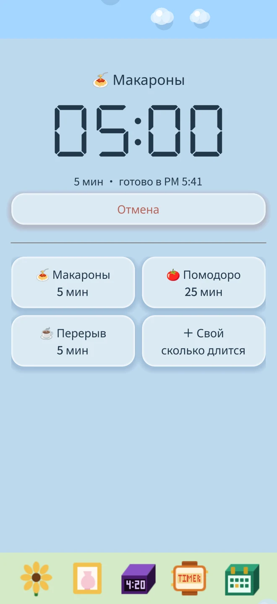
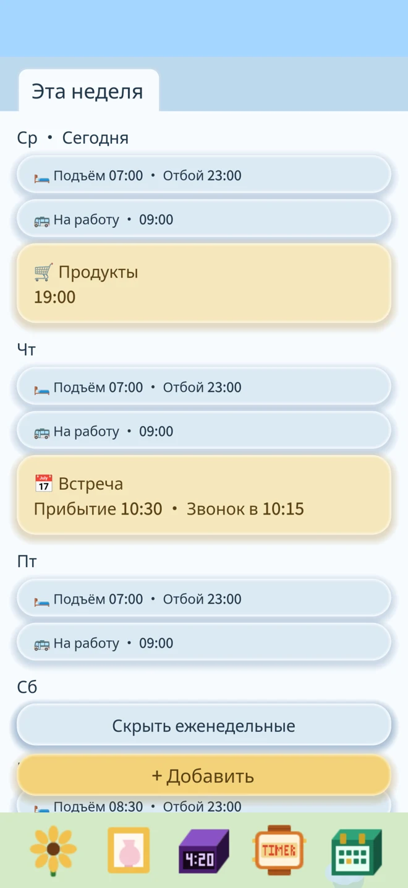
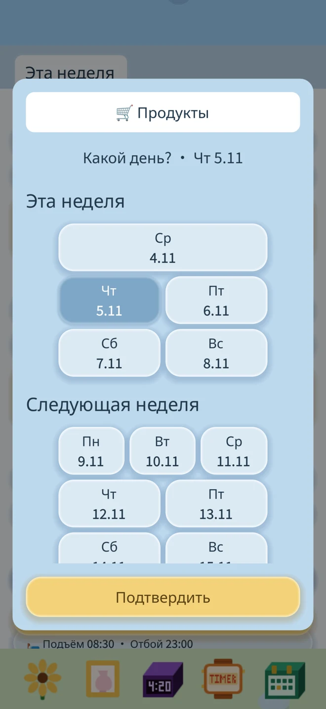
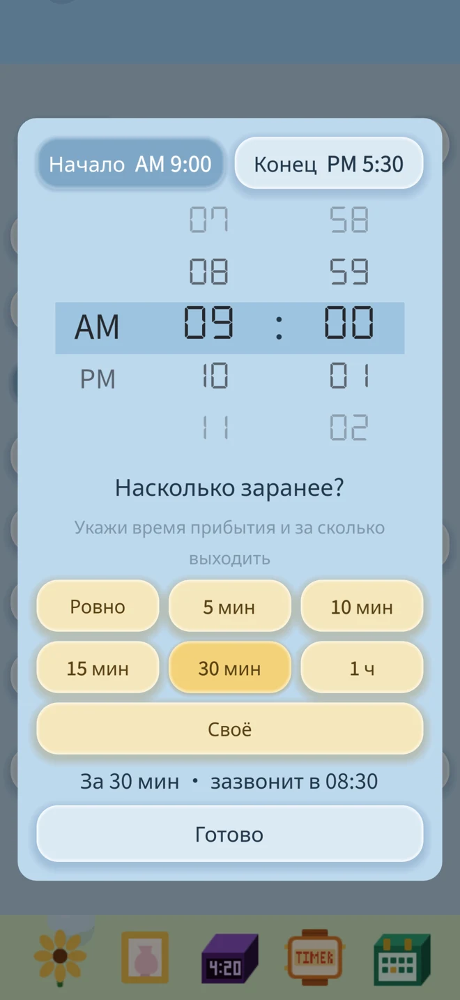

Таймер: сохраняй любимые интервалы и запускай снова
Лапша, чай или перерыв: выбери шаблон и подтверди запуск.
Сохраняй свои названия и длительности, чтобы использовать их снова.

Таймеры, планы и твой собственный цветок.
Без рекламы. Без подписок. Интернет не нужен. Всё твоё.
Будильники, напоминания и прогресс цветка хранятся на твоём устройстве.
Загрузить в App StoreЛапша, чай или перерыв: выбери шаблон и подтверди запуск.
Сохраняй свои названия и длительности, чтобы использовать их снова.

Эта неделя, следующая и дальше — планы сгруппированы по неделям. Синие напоминания повторяются каждую неделю, жёлтые звонят один раз.



Твой собственный цветок
Выбери подсолнух или орхидею и подходящий горшок. Перетаскивай лейку, чтобы полить цветок, и удобрение, чтобы подкормить его.
Без воды он со временем поникнет. Немного воды — и он снова поднимет голову.
На экране блокировки тоже
Приложение использует системные будильники iOS 26 и запрашивает разрешение на их работу. После разрешения они могут звонить даже в беззвучном режиме.
Обратный отсчёт может отображаться на экране блокировки и в Dynamic Island на совместимых моделях. По окончании таймера придёт уведомление.
Поставь будильник на завтра. Полей цветок сегодня.